entry_column
Source anchor: frame_0001, t=0.000s. Perspective is not registered or matched.
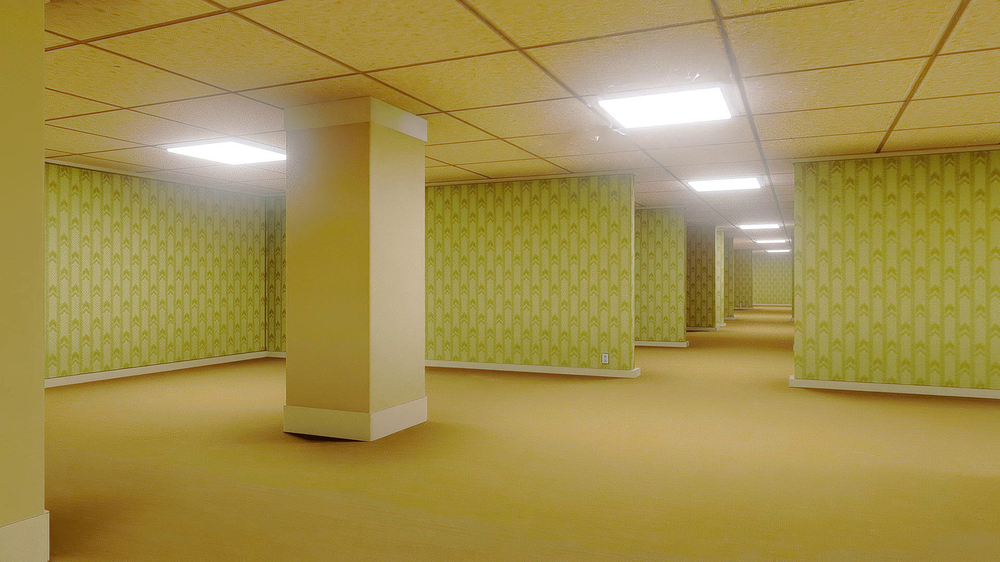
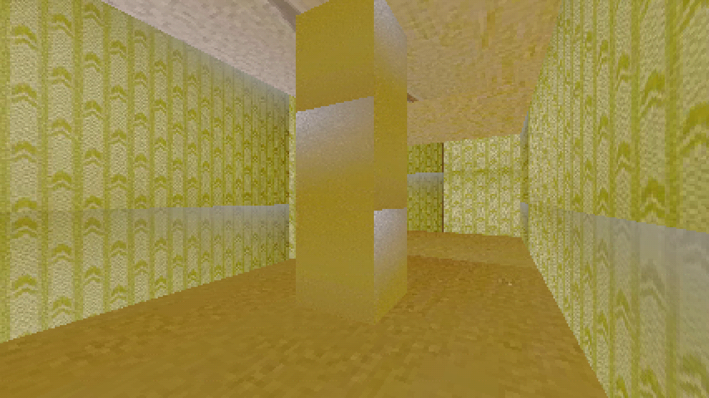
corridor_corner.mp4 adaptation. The candidate is provisional; it does not inherit #163/#164 design approval.The source frames are decoded directly from the original 1920×1080, 24 fps video. Candidate views use the same material profile and controller as the existing Godot project.
Each pair uses a source frame as context only. The camera positions are not registered, pose-matched, or scale-calibrated. The authored L-shaped boundary is a design choice, not a recovered plan. The source footage is synthetic and has visible ceiling/geometry discontinuities.
Source frame sheet · Adapted room sheet · Paired comparison sheet · Authored layout proposal · Transfer adaptation v2 record · Accepted #163/#164 record · Report · Commands
The candidate has one completed box column, an L-shaped walkable union, a closed visible shell, and separate boundary/obstacle collision. It has no connector. Walk the full turn and backtrack before judging whether the source appearance and authored footprint work together.
FPS walkthrough: godot4 --path godot_walk --rendering-driver vulkan --resolution 1280x720 res://scenes/issue165_corridor_corner_transfer.tscn · WASD to move, mouse to look, Escape to release the pointer, R to reset.
Does this authored L-shaped room, with direct source-cropped wallpaper/floor/ceiling and a completed four-sided column, feel like a useful playable adaptation of corridor_corner.mp4 despite the unregistered layout?
Source anchor: frame_0001, t=0.000s. Perspective is not registered or matched.


Source anchor: frame_0036, t=1.458s. Perspective is not registered or matched.
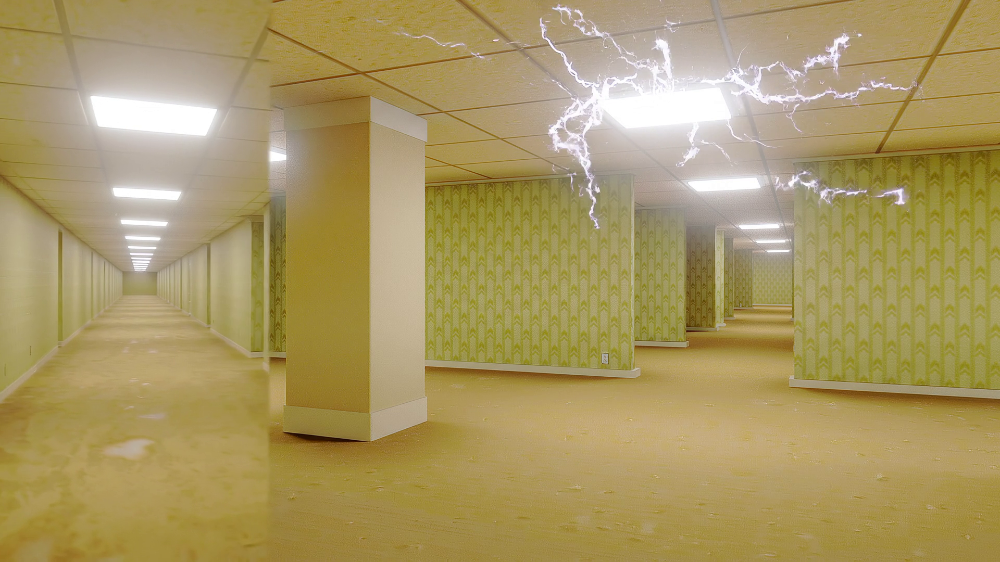
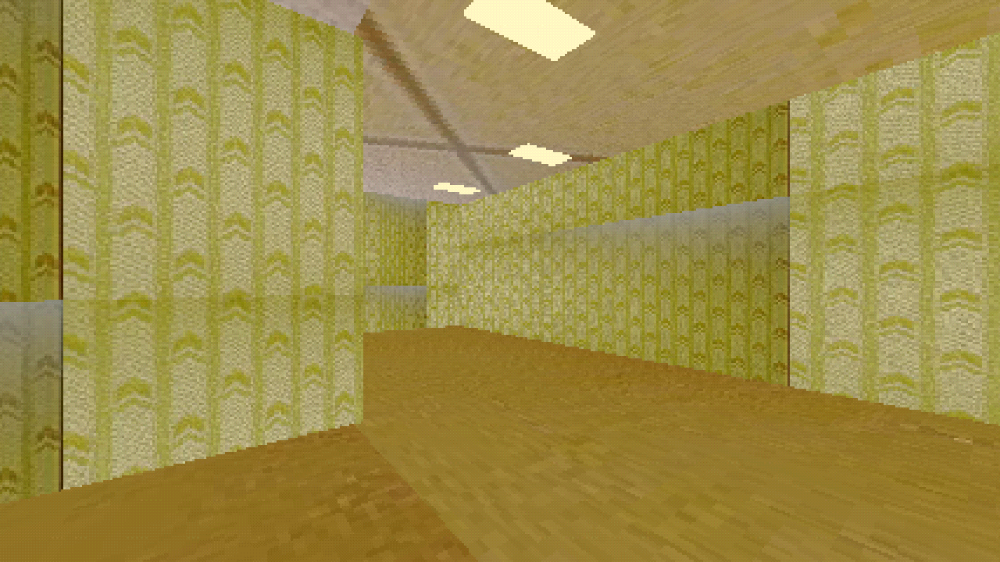
Source anchor: frame_0059, t=2.417s. Perspective is not registered or matched.
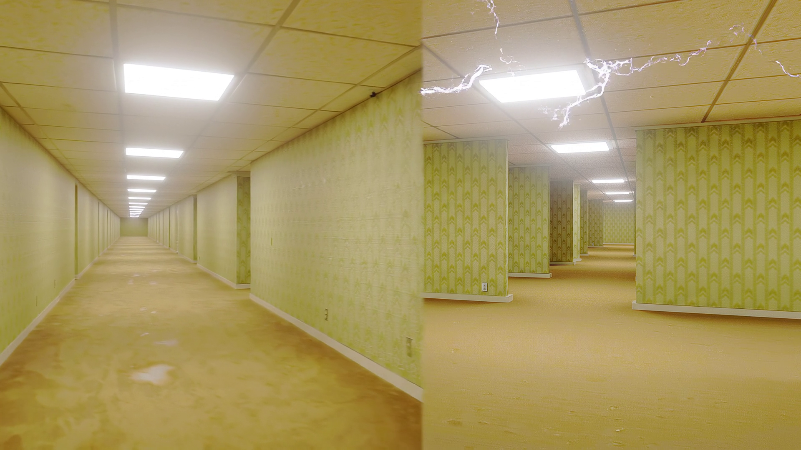
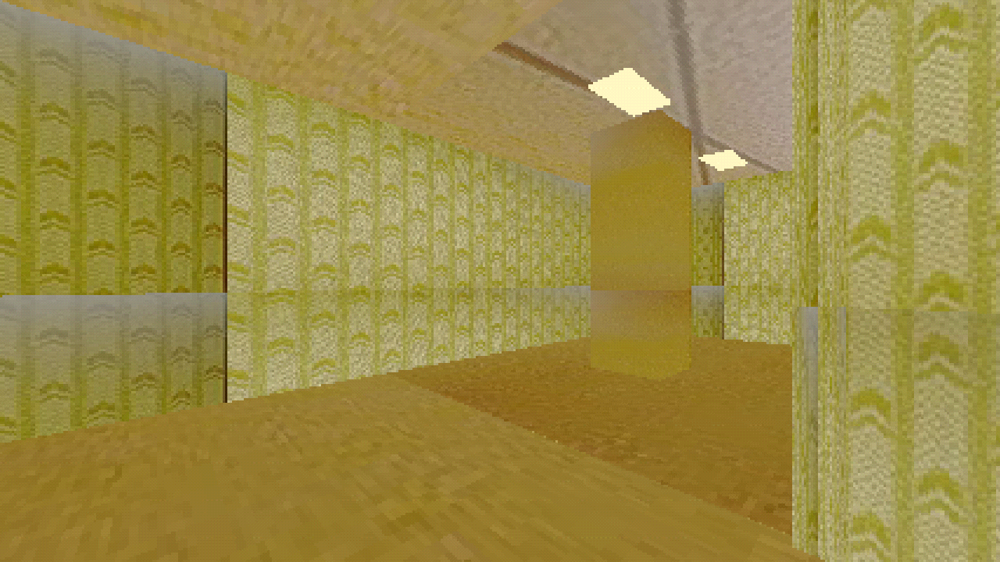
Source anchor: frame_0085, t=3.500s. Perspective is not registered or matched.
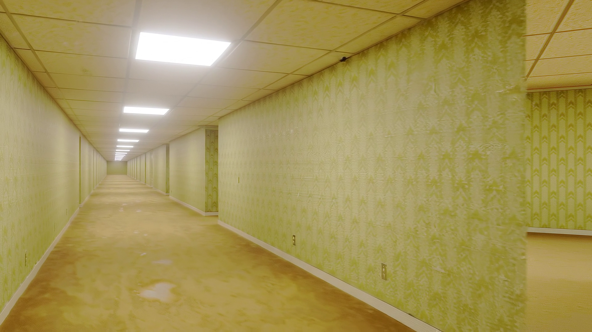
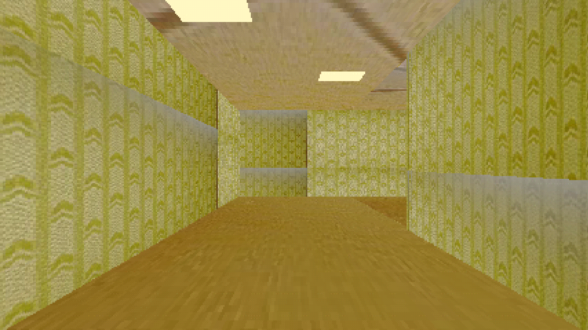
Source anchor: frame_0096, t=3.958s. Perspective is not registered or matched.
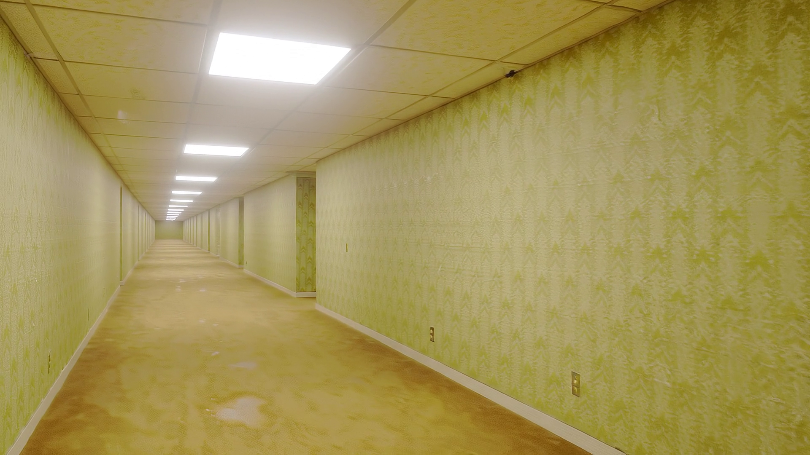
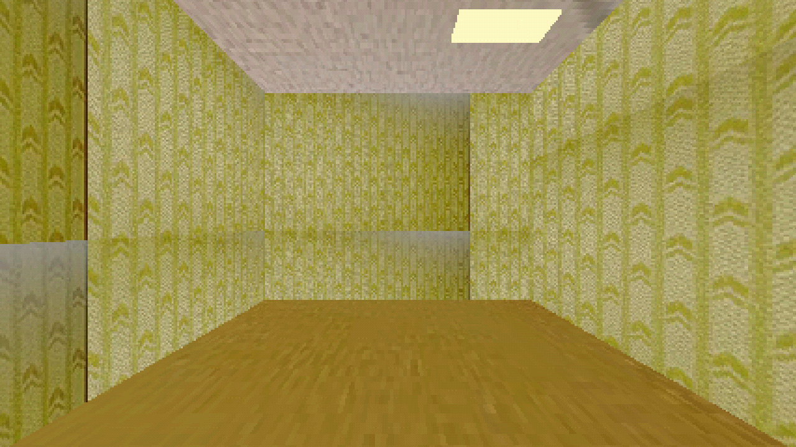
Source anchor: frame_0001, t=0.000s. Perspective is not registered or matched.
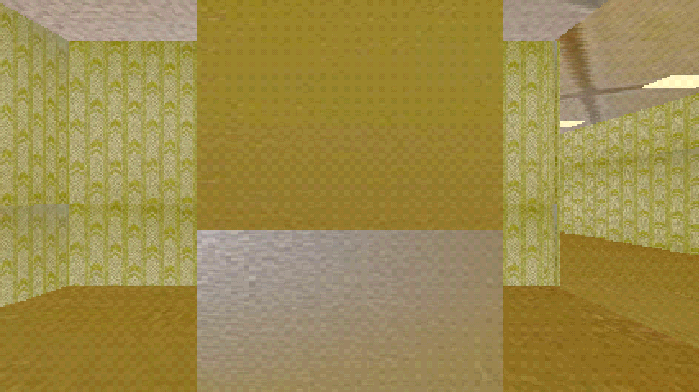
Source anchor: frame_0001, t=0.000s. Perspective is not registered or matched.
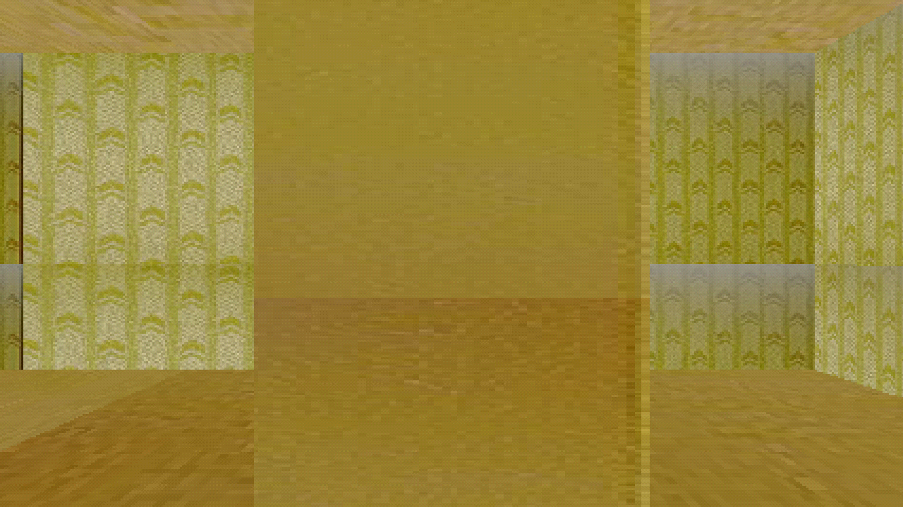
Source anchor: frame_0001, t=0.000s. Perspective is not registered or matched.
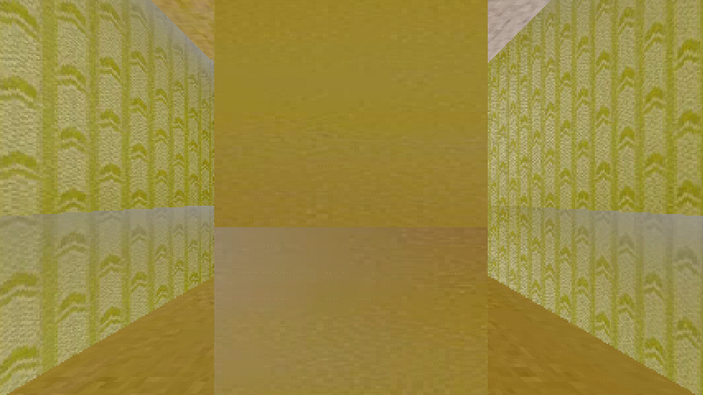
Source anchor: frame_0001, t=0.000s. Perspective is not registered or matched.
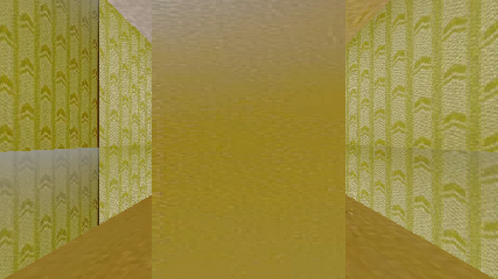